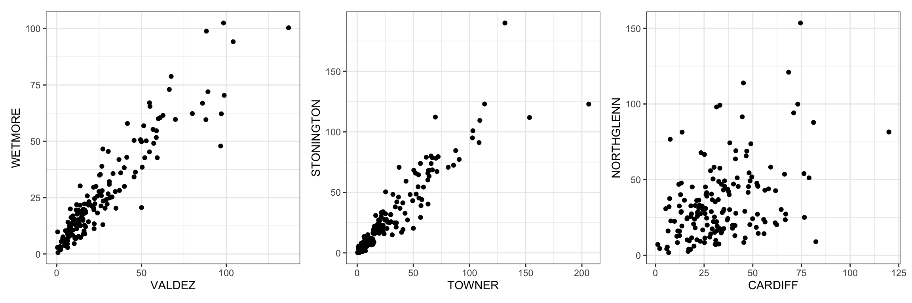
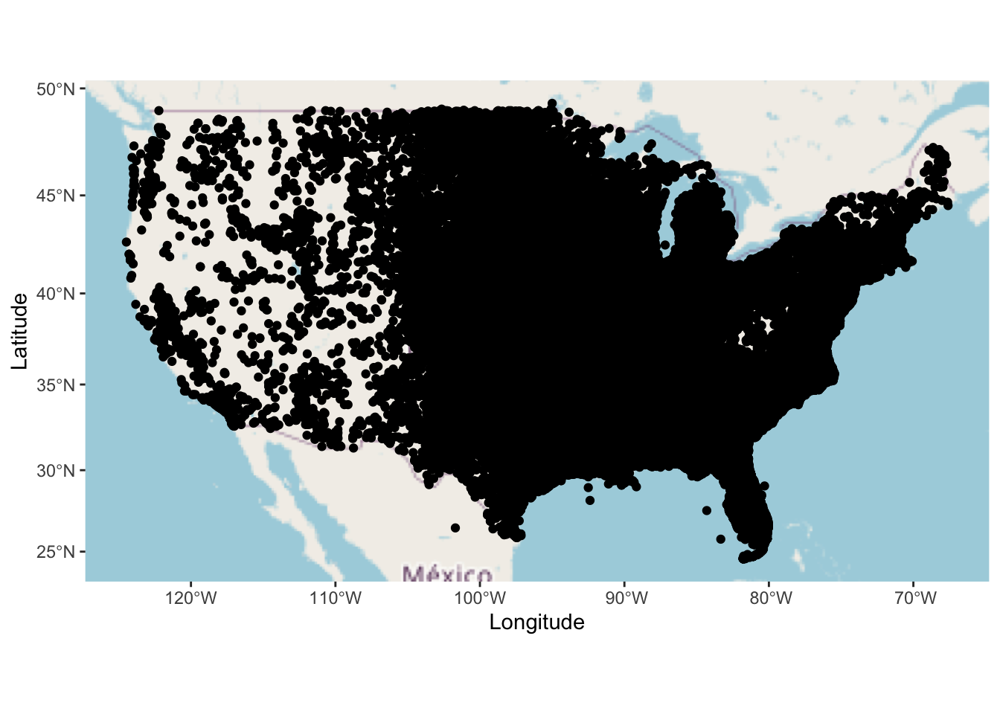

Attaching package: 'dplyr'The following objects are masked from 'package:stats':
filter, lagThe following objects are masked from 'package:base':
intersect, setdiff, setequal, union
Attaching package: 'dplyr'The following objects are masked from 'package:stats':
filter, lagThe following objects are masked from 'package:base':
intersect, setdiff, setequal, unionIn many applications we have information on the location where the data were observed. Applications for which such spatial information is often available include:
Disease modelling: Knowledge of where infected patients are living allows us to identify the population at risk and to explore disease dynamics.
Socioeconomic studies: Data on income, access to schools and social activities are collected across administrative areas.
Weather data: Observations are collected at several weather stations and then used to predict the weather across the country.
In this chapter we explore how to analyze effectively data in such applications. We start by introducing the three types of spatial data:
Data is collected at a fixed set of spatial locations. Such data are, for instance, analyzed in meteorology, hydrology, public health (pollution levels), where the locations of the measurement stations are given by their longitude and latitude coordinates (and possibly altitude).
Differs from point-referenced data in that spatial locations themselves are random. This type of data occurs, for instance, when monitoring disease outbreaks and conducting ecological studies, where the locations of the observations are unknown until we start collecting the data.
Differs from point-referenced data in that observations represent information about fixed spatial areas instead of spatial points. For instance, when analyzing insurance claims, we may have access to the number of claims for a postcode area, but no information on the individual claims.
Sections 4.1 to 4.4 focus on the analysis of point-referenced data, and we will consider visualization of the other types of spatial data in Sections 4.5 to 4.7.
The file “Temperature Germany.csv” contains the maximum temperature recorded on 1 May 2020 for 75 weather stations across Germany. Let’s look at the provided variables
[1] "name" "latitude" "longitude" "altitude" "max.temp" Our variable of interest is max.temp, the recorded maximum temperature, and latitude, latitude and altitude specify the spatial locations of the 75 weather stations.
We can already create a first plot of maximum daily temperature at different locations using ggplot2:
library(ggplot2)
ggplot( Temperature, aes( x=longitude, y=latitude ) ) +
geom_point( aes(color=max.temp), size=2.5 ) + theme_bw() +
scale_color_distiller( palette="Reds", trans="reverse" ) +
labs( x="Longitude", y="Latitude", color="Temperature" ) +
theme( axis.title=element_text(size=15), axis.text=element_text(size=15) )
Is this really the best way to plot the data?
One may argue that the plot is not ideal since it does not provide any spatial context, that is, we cannot relate the illustrated values and locations to any known geographical features.
We now introduce two approaches for visualizing point-referenced data, both of which aim to provide additional spatial context to aid interpretation. The first approach uses shapefiles which allow us to add the outline of Germany, that is its borders, to the plot. The second approach will place the points upon a map.
Administrative boundaries can be described as a polygon with a potentially very large number of edges. In some cases we may also deal with several polygons. For instance, when considering the UK, we would have one polygon per island. Such polygons are specified via a shapefile (.shp) and can be used in R.
The administrative boundaries of countries are freely available from www.gadm.org for educational and academic use. Let’s download the data for Germany and load the Level 1 data into R using the function read_sf() in the sf R package
Important: You need all the downloaded files, not just the .shp file.
Remark: The Level 0 shapefile only contains the borders, while higher levels (Level 1, etc.) also provide administrative boundaries within the country - this applies to all countries listed on www.gadm.org .
We plot the boundaries using geom_sf() from the sf package in combination with ggplot():
IMPORTANT: The shapefiles provided by GADM are very large, and I noticed that some laptops may struggle to create the plot. Should you have this issue, you may want to use the function st_simplify() to reduce the complexity of your polygon - the function has a parameter dTolerance which specifies how much the “wiggles” in the polygon will be straightened. Let’s set dTolerance=2000 for the shapefile considered above
GER_simple <- st_simplify( GER, dTolerance = 2000, preserveTopology=TRUE )
ggplot( data=GER_simple ) + theme_bw() + geom_sf()
We see only very minor changes in the plot, and these are unlikely to affect our analysis. If we set dTolerance too large, we may get a shape that looks too different from the original file. As such, we have to be a bit careful with the value we specify for dTolerance.
Moving on with our analysis, the final step is to add the data points displayed in Figure @ref(fig:Germany0) to the plot above. As such, our data graphic is made up of two layers - one for the shapefile and one for the data points. The order is important now because ggplot2 builds the plot layer by layer:
ggplot( GER ) + theme_bw() + geom_sf() +
geom_point( data=Temperature, aes(x=longitude, y=latitude, color=max.temp), size=3 ) +
scale_color_distiller( palette="Reds", trans="reverse" ) +
labs( x="Longitude", y="Latitude", color="Temperature" )
Note, we deviate from the format used in Chapter [2][Data Visualization], because we are now working with two data frames - one for the boundaries and another for the weather data. Therefore, we have to specify the data for the points separately in geom_point().
So far we have used longitude and longitude within a Cartesian coordinate system. However, the earth is a three-dimensional flattened sphere and thus it is not flat. The process of converting locations in a three-dimensional geographic coordinate system to a two-dimensional representation is called projection.
There exists a wide range of projections because no projection can preserve all properties at the same time, in particular shape/angle and area.
We can change projections with the coord_sf() function from the sf package. Let’s compare some possible projections applied to Canada and Norway:
library(patchwork)
CANADA <- read_sf("Data/gadm41_CAN_shp/gadm41_CAN_1.shp")
CANADA <- st_simplify( CANADA, dTolerance = 5000 )
CANPlot1 <- ggplot( data=CANADA ) + theme_bw() + geom_sf()
CANPlot2 <- CANPlot1 + coord_sf( crs=st_crs(3347) )
NORWAY <- read_sf("Data/gadm41_NOR_shp/gadm41_NOR_1.shp")
NORWAY <- st_simplify( NORWAY, dTolerance = 2000 )
NORPlot1 <- ggplot( data=NORWAY ) + theme_bw() + geom_sf()
NORPlot2 <- NORPlot1 + coord_sf( crs=st_crs(3346) )
( CANPlot1 + CANPlot2 ) / ( NORPlot1 + NORPlot2 )
In the left plots the meridians and parallels are orthogonal and, thus, these projections are angle-preserving. This projection is also known as the WGS84 coordinate reference system, which is the standard for GPS systems and Google Earth. In the right plots, we do not preserve the angels, but we better visualize that we are working with data on a three-dimensional sphere. As data scientists, we should be aware that our choice of projection may have a direct influence on how the plot is perceived by others. While such aspects are negligible when analyzing data across small spatial areas, we should keep this in mind when considering spatial data collected across large spatial scales.
Remark: You have to experiment a bit with the value in st_crs() when creating plots. A value of 4326 corresponds to the WGS84 system.
So far we added boundaries to a plot to aid the reader’s orientation. When we consider the German weather data, we find that the data set also provides altitude. However, such information is difficult to incorporate within a shape file. Therefore, it may be better to provide a map that indicates larger water bodies and possibly elevation.
We use the ggspatial R package to import maps provided by OpenStreetMap and then plot the points onto them. This requires us to include the annotation_map_tile() function to our ggplot2 commands and replace geom_point() by geom_spatial_point():
library(ggspatial)
ggplot( Temperature, aes( x=longitude, y=latitude) ) +
annotation_map_tile() +
geom_spatial_point( aes(color=max.temp), size=3 ) +
scale_color_distiller( palette="Reds", trans="reverse" ) +
labs( x="Longitude", y="Latitude", color="Temperature" )
Remark: There are different types of maps provided by the ggspatial package, but they are not relevant for the examples we consider in this course.
While this type of map is not great at visualizing altitude, we can observe that the temperature tends to be lower for higher altitudes and for locations close to the sea (this is what we would expect).
After visualizing the data we now consider the task of making a prediction at an unobserved location. Let \(x_1,\ldots,x_n\) and \(\mathbf{s}_1,\ldots,\mathbf{s}_n\) denote the observed values and locations respectively; \(\mathbf{s}_1,\ldots,\mathbf{s}_n\) are often described by their longitude and latitude and are located within a bounded area \(\mathcal{S}\subset\mathbb{R}^2\).
Consider the German temperature data in Figure @ref(fig:GERMap). How would you use the data across the 75 weather stations if you were asked to provide a prediction \(x^*\) at an unobserved location \(\mathbf{s}^*\)?
Intuitively, the values at locations geographically close to \(\mathbf{s}^*\) may provide the most useful information. Inverse distance weighting puts this idea into a mathematical framework, and it falls into the category of spatial interpolation techniques. The approach postulates that the predicted value \(x^*\) at \(\mathbf{s}^*\) is a weighted average of the observed data points, with higher weighting given to locations that are geographically close to \(\mathbf{s}^*\). We will formalize this approach in the following and see how to perform it in R.
Let \(d:\mathbb{R}^2 \times \mathbb{R}^2 \to \mathbb{R}_+\) be a metric that defines a distance between any two points \(\mathbf{s}_1=(s_{11},s_{12})\in\mathbb{R}^2\) and \(\mathbf{s}_2=(s_{21}, s_{22})\in \mathbb{R}^2\). The most commonly used distance metric is the L\(_2\) norm/Euclidian distance:
\[\begin{equation} d(\mathbf{s}_1, \mathbf{s}_2) = ||\mathbf{s}_1-\mathbf{s}_2||_2= \sqrt{(s_{11}-s_{21})^2 + (s_{12}-s_{22})^2}. (\#eq:Euclidian) \end{equation}\]
Inverse distance weighting defines the predicted value \(x^*\) at the unobserved location \(\mathbf{s}^*\) as \[\begin{equation} x^* = \begin{cases} \dfrac{\sum_{i=1}^n w(\mathbf{s}_i,\mathbf{s}^*) x_i}{\sum_{i=1}^n, w(\mathbf{s}_i,\mathbf{s}^*)} & \mbox{if}~d(\mathbf{s}^*, \mathbf{s}_i)>0~\mbox{for all } i=1,\ldots,n,\\ x_i & \mathrm{if}~d(\mathbf{s}^*, \mathbf{s}_i)=0, \end{cases} (\#eq:IDW) \end{equation}\] where \(w(\mathbf{s}_i,\mathbf{s}^*) = \left[d(\mathbf{s}_i,\mathbf{s}^*)\right]^{-p}\) and \(p>0\) is called the power parameter and has to be selected by us. One important rule to remember is that the weight given to the observation closest to \(\mathbf{s}^*\) increases with \(p\); we will see this when plotting the calculated predicted values later for different values of \(p\).
There exist R functions to perform inverse distance weighting, but we will implement our own function IDW() combines equations @ref(eq:Euclidian) and @ref(eq:IDW). This will make it easier to plot our predictions.
Suppose we want to use the German weather data to predict the maximum temperature on 1 May 2020 at an unobserved location with longitude 13.1 and latitude 51.0, \(\mathbf{s}^* = (13.1, 51.0)\). We consider the settings \(p=0.5\) and \(p=2\) for the power parameter and obtain the following values for \(x^*\):
[1] 23.4665IDW( X=Temperature$max.temp, S=coord, s_star, p=2.0 )[1] 22.67209We see that the two settings for \(p\) give predictions that differ by almost 1 degree Celsius. Consequently, the selection of \(p\) is indeed crucial and we will consider its selection in more detail in the next part.
We want to make predictions across the whole study space, instead of a single location \(\mathbf{s}^*\). Here we visualize these predictions across a map, which is also useful to identify suitable values for \(p\).
The first step is to define a grid that covers the study space \(\mathcal{S}\). Here, we will simply define \(\mathcal{S}\) as a rectangle (based on longitude and latitude coordinates):
points_lat <- seq( 47.1, 55.1, by=0.05 )
points_lon <- seq( 5.8, 15.6, by=0.05 )
pixels <- as.matrix( expand.grid( points_lon, points_lat ) )We then apply our implemented IDW() function to the grid points with the power parameter being set to \(p=0.5\), \(p=2.0\) and \(p=20\):
The next step is to collate the estimates into a data frame so that we can plot the predictions:
library(tidyr)
Predict <- data.frame( "Lon"=pixels[,1], "Lat"=pixels[,2],
"p0.5"=p05, "p2"=p2, "p20"=p20 )
Predict <- Predict %>% pivot_longer( cols=p0.5:p20, names_to = "Power" )
Predict <- Predict %>%
mutate( Power = case_when( Power == "p0.5" ~ "p=0.5", Power == "p2" ~ "p=2.0",
.default = "p=20" ) )Finally, we plot the grid and the calculated predictions. We add the boundaries of Germany and the locations of the weather stations to the plot to provide some spatial context:
ggplot( data=Predict ) + theme_bw() +
geom_raster( aes( x=Lon, y=Lat, fill=value ) ) +
facet_wrap( ~Power ) +
scale_fill_distiller( palette="Reds", trans="reverse" ) +
geom_sf( data=GER, alpha=0.0, color="white" ) +
geom_point( data=Temperature, aes(x=longitude, y=latitude) ) +
labs( fill="°C", x="Longitude", y="Latitude" )
What do we notice?
When considering the range of the colour bars, we notice that \(p=0.5\) leads to the estimated temperatures being much less varied than for \(p=2\). Further, \(p=20\) produces unrealistic predictions and should not be selected, since we predict sudden changes in temperature across space, with the predicted value being almost only determined by the value observed at the location closest to \(\mathbf{s}^*\); the latter is also referred to as a tessellation of the region.
The difference in the range of predicted values for the different values of \(p\) can be explained by that the weight given to the observation closest to \(\mathbf{s}^*\) increases with \(p\) - we highlighted this aspect earlier. These findings give us some guidance on the selection of \(p\):
\(p\) should be small enough to avoid tessellation, unless we believe such a feature is realistic;
\(p\) should be large enough to give predictions that are similar in range to the observed values.
The range of predicted values for \(p=0.5\) is in fact substantially smaller than the range of observed values in Figure @ref(fig:GERMap) - we predict temperatures above 20 degrees Celsius even for the highest mountains, although the true value is probably much lower. This suggests that \(p=0.5\) is too small and that \(p=2\) performs best amongst the considered values, because we have both a range of predictions similar to the observed data and the produced prediction map still appears relatively smooth.
Remark 1: We ignored that temperature depends on altitude in our analysis. If we had access to altitude for each point on the grid, we could extend the distance measure in Equation @ref(eq:Euclidian) to incorporate latitude, longitude and altitude in the inverse distance weighting estimates.
Remark 2: We selected \(p\) “by eye”. We may use cross-validation (which some of you may have seen in MA22018) to find the value \(p\) that performs best in terms of prediction.
Remark 3: Care should be taken when using inverse distance weighting to make predictions for a location \(\mathbf{s}^*\) that is not close to \(\mathbf{s}_1,\ldots,\mathbf{s}_n\). For instance, we should not use the temperature data from Germany to predict the temperature for Bath.
We now move on to exploring and quantifying spatial dependence, that is, how informative is the data at one location to say something about near-by locations. This is a key aspect underlying the majority of spatial data analysis methods. For instance, inverse distance weighting makes the assumption that data collected at the locations \(\mathbf{s}_1,\ldots,\mathbf{s}_n\) is useful to make predictions at unobserved locations, and that locations closest to the unobserved location provide the most information.
In the examples considered so far, such as the German weather data in Figure @ref(fig:GERMap), we found that spatially close sites tend to have similar values.
As a second motivating data example, let’s consider the recorded sea surface temperature anomalies for the North Sea for 1 November 2024 (provided in the file “SeaSurface.csv”) as recorded by NOAA:
SSTA <- read.csv( "Data/Sea Surface Temperature Anomalies.csv" )Observations are on a 5km resolution. To create a plot of the data, we first have to convert the data frame providing longitude, latitude and sea surface temperature into a spatial data object using st_as_sf():
SSTA_sf <- st_as_sf( SSTA, coords=c("lon", "lat") ) %>% st_set_crs( 4326 )We can now create the plot with geom_sf():

The plot shows that locations which are spatially close observe a similar value. We now want to quantify this similarity of values of spatially close sites using the variogram which is based on concepts we are familiar with from Year 1 Probability and Statistics.
We already came across dependence of two random variables in Year 1. To explore dependence between two random variables \(X\) and \(Y\), we considered the covariance [ (X,Y) = = (XY) - X Y. ] In a spatial context, we now consider the observation at a spatial site as the realization of a random variable, with the random variables at any two sites being potentially dependent. This leads to the concept of a random field, which is also referred to as a spatial random process.
Definition: A random field \(\{X(\mathbf{s}):\mathbf{s}\in\mathcal{S}\}\) is a family of random variables that are defined on the same probability space and indexed by the spatial location \(\mathbf{s}\in\mathcal{S}\).
For the sea surface data, \(X(\mathbf{s})\) describes the distribution of the sea surface temperature anomaly at location \(\mathbf{s}\in\mathcal{S}\). Further, Figure @ref(fig:SST) corresponds to a single sample from the random field.
Consider an arbitrary pair \((\mathbf{s},\tilde{\mathbf{s}})\) of sites across the region \(\mathcal{S}\). While dependence of \(X(\mathbf{s})\) and \(X(\tilde{\mathbf{s}})\) may be quantified via their covariance, we usually use the semi-variogram in spatial data analysis:
Definition: The semi-variogram for the locations \(\mathbf{s}\) and \(\tilde{\mathbf{s}}\) is defined as [ (,) = . ]
From now on we make the assumption that \(\mathbb{E}\left[X(\mathbf{s})\right]\) is the same for all \(\mathbf{s}\in\mathcal{S}\). Consequently, the expression for the semi-variogram simplifies to half the average squared difference between the values at these locations,
\[\begin{equation} \gamma(\mathbf{s},\tilde{\mathbf{s}}) = \frac{1}{2} \mathbb{E}\left[\{X(\mathbf{s})-X(\tilde{\mathbf{s}})\}^2\right] = \frac{1}{2} \mathrm{Var}\left[X(\mathbf{s})-X(\tilde{\mathbf{s}})\right]. (\#eq:Semivariogram) \end{equation}\]
The semi-variogram has several important properties:
\(\gamma(\mathbf{s},\tilde{\mathbf{s}})\geq 0\) since it is the expectation of a square, with smaller values corresponding to stronger dependence.
If \(\mathbf{s}=\tilde{\mathbf{s}}\), we have \(\gamma(\mathbf{s},\tilde{\mathbf{s}})=0\).
If \(X(\mathbf{s})\) and \(X(\tilde{\mathbf{s}})\) are independent and identically distributed, [ (,)=[X()]=[X()]. ]
We want to estimate \(\gamma(\mathbf{s},\tilde{\mathbf{s}})\) in expression @ref(eq:Semivariogram) using the observations \(x_1,\ldots,x_n\) and locations \(\mathbf{s}_1,\ldots,\mathbf{s}_n\).
The main challenge is that we only have a single observation at each of the \(n\) locations. For instance, if we were to derive an estimate for \(\gamma(\mathbf{s}_1,\mathbf{s}_2)\) using \(x_1\) and \(x_2\) only, we would have \(\gamma(\mathbf{s}_1,\mathbf{s}_2)=\frac{1}{2}(x_1-x_2)^2\). However, such an estimate is likely to be poor. This is a common problem in spatial data analysis and applies to all the examples considered so far.
To make use of all the data available, we make the assumptions that the random field is stationary and isotropic. Simply speaking, these assumptions imply that for any pair (\(\mathbf{s},\tilde{\mathbf{s}}\)) of locations \(\gamma(\mathbf{s},\tilde{\mathbf{s}})\) is fully specified by their spatial distance. As such, there exists a function \(\tilde{\gamma}:\mathbb{R}\to\mathbb{R}_+\) such that for all \(\mathbf{s},\tilde{\mathbf{s}}\in\mathcal{S}\) [ (,) = ( || - || ). ]
Important: You have to carefully consider whether the assumption holds that dependence is fully described by spatial distance. If this is not the case, you should not apply the following estimation procedure.
Remark: The concepts of stationarity and isotropy will be introduced more formally in MA32024 Statistical Modelling and Data Analytics 3B. In this course it’s only important to discuss the general assumptions we make when estimating the semi-variogram.
For a stationary and isotropic random process, we can estimate \(\tilde{\gamma}(h)\) at distance \(h>0\) as follows:
Find all pairs of sites with a distance similar to \(h\). This gives the set \(\mathcal{N}_h =\{(i,j):||\mathbf{s}_i - \mathbf{s}_j||\approx h\}\).
Calculate the estimate for \(\tilde\gamma(h)\) as [ (h) = _{(i,j) _h} (x_i-x_j)^2. ]
The R package gstat provides the function variogram() to perform the estimation. We will see, however, in the following examples that some data wrangling is required.
The first step is to remove any locations with missing data (represented by NA) from the data frame - we have no data for land areas and the variogram() function cannot handle such data sets:
SSTA_gamma <- drop_na( SSTA, Anomaly )Before we can use the variogram() function, we have to carefully consider whether all our key assumptions are reasonable:
Since we consider anomalies, i.e., deviations from the mean, we may assume that the mean anomaly is 0 (or at least very close to it) for all locations in the North Sea.
Figure @ref(fig:SST) shows a similar level of variability in the values of close-by sites for all areas of the North Sea. While this is not a sufficient condition, there is no clear reason for us to reject the assumption.
Now that we verified that our assumptions are not unreasonable, we are ready to estimate the semi-variogram for the random field \(\{X(\mathbf{s}):\mathbf{s}\in\mathcal{S}\}\). The first step is to convert the data frame SST_gamma to make it clear that the spatial locations are specified by their latitude and longitude coordinates:
library(sp)
coordinates( SSTA_gamma ) <- ~lon+latWe can now use the variogram() function to calculate and plot the estimated function \(\hat\gamma(h)\):

From the plotted semi-variogram we conclude that the dependence between pairs of sites decreased with increasing spatial distance. It’s also important to consider whether the function levels off at some distance, which would indicate independence at large spatial distances. This seems not to be the case here, and thus observations are dependent even at a distance of \(h=2\).
Remark: The options and in the variogram function() specify the size of \(\mathcal{N}_h\) and the maximum distance \(h\) to be considered in the estimation.
In many applications, interest lies in identifying the key data structures and to perform dimension reduction. There exists a range of techniques, such as cluster analysis, in data science and machine learning to achieve this. To conclude our trip through the world of point-referenced data, we introduce principal component analysis (PCA) and illustrate how it may be used to explore the spatial structure in the data. You may learn more about this technique in the Year 3 unit Applied Data Science.
Let’s consider a toy example with two sites and \(T\) data points for each site. We use \(x_{i,t}\) to denote the observation for site \(i\in\{1,2\}\) on day \(t\in\{1,\ldots,T\}\). For illustration, we simulate some data with \(T=200\) and visualize it using a scatter plot:
set.seed(2025)
x1 <- rnorm( 200, mean=2, sd=4 )
x2 <- rnorm( 200, mean=x1, sd=1 )
X <- data.frame( "Site1"=x1, "Site2"=x2 )
ggplot( X, aes(x=Site1, y=Site2) ) + geom_point() +
labs( x="Data for Site 1", y="Data for Site 2" ) + theme_bw()
We can see that the simulated data is positively correlated, with most of the points lying close to the line \(y=x\). Principal component analysis is concerned with finding these important directions in cases where we have many variables / a large number of spatial sites.
In this course, we focus on deriving these directions as they give insight into the spatial structure of the data. Another important aspect of PCA, which we will not cover, is that of dimension reduction, which is particularly useful for modelling. For the data above, we may use PCA to project the two-dimensional data onto a one-dimensional subspace, which is illustrated below.

We won’t cover the mathematical background on PCA, and more details will be covered in the Year 3 Applied Data Science unit.
Suppose we have \(T\) observations \(x_{i,1},\ldots,x_{i,T}\) for the \(i\)-th site with location \(\mathbf{s}_i\) (\(i=1,\ldots,n\)), and that \(x_{1,t},\ldots,x_{n,t}\) (\(t=1,\ldots,T\)) are recorded at the same time. We have to perform the following steps which are done in one go by the R function prcomp():
Calculate \(\tilde{x}_{i,t} = (x_{i,t} - \bar{x}_i)/\hat\sigma_i\), where [ {x}_i = ] denotes the average value for the observations at the location \(\mathbf{s}_i\), and \(\hat\sigma_i\) is the sample standard deviation.
Given the vectors \(\left\{\tilde{\mathbf{x}}_t =(\tilde{x}_{1,t},\ldots,\tilde{x}_{n,t}):t=1,\ldots,T \right\}\), we derive the matrix [ = _{t=1}^T _t _t^{}. ] This matrix is also known as the empirical covariance matrix, and it is a multivariate extension of the covariance covered in Year 1 Probability and Statistics.
Derive the eigenvalues and eigenvectors of \(\Sigma\), i.e., we are seeking the matrix \(\mathbf{U}\) of eigenvectors and the diagonal matrix \(\mathbf{D}\) of eigenvalues \(\lambda_1,\ldots,\lambda_n\) such that \(\Sigma = \mathbf{UDU}^{\mathrm{T}}\).
How do we use the eigenvectors and eigenvalues to analyze the structure in the spatial data?
We visualize the eigenvectors using the techniques covered so far. Each entry of an eigenvector corresponds to one of the sites and we study their spatial structure, starting from the eigenvector with the largest eigenvalue.
We use the eigenvalues \(\lambda_1,\ldots,\lambda_n\) to determine how many eigenvectors we need to explore. The eigenvalues are ordered, i.e., \(\lambda_1 > \lambda_2 > \cdots > \lambda_n\). For each \(m=1,\ldots,n\), we compute the ratio \[\begin{equation} \frac{\sum_{j=1}^m \lambda_j}{\sum_{j=1}^n \lambda_j}. (\#eq:Ratio) \end{equation}\] We then look for the first value of \(m\) for which the ratio exceeds 0.9. This corresponds to these \(m\) components explaining at least 90% of the variation in the data. This is a widely used rule-of-thumb in PCA.
Important: For the eigenvalues and eigenvectors to accurately reflect the spatial structure, we have to make the assumption of linearity. This means that for any \(i=1,\ldots,n\), we can approximate \(X_{i,t}\) by a linear combination of the (\(n-1\)) remaining variables \(X_{1,t},\ldots,X_{i-1,t},X_{i+1,t},\ldots,X_{n,t}\).
PCA may seem very abstract at this point, but the following example with illustrate how to use it in practice.
The file “PrecipitationColorado.csv” contains the amount of precipitation per month for 30 cities in the state and the period 2010-2023. So we have \(n=30\) sites and \(T=168\) observations per site.
Let’s import the precipitation data and the information on the spatial sites.
Before we perform PCA, we have to consider the assumption of linearity, which can be difficult to verify in practice. In this example it is sufficient to just plot the data for pairs of sites against each other and to see whether there is a linear pattern
ggplot( ColoradoPrecip, aes( x=VALDEZ, y=WETMORE) ) + geom_point() + theme_bw() +
ggplot( ColoradoPrecip, aes( x=TOWNER, y=STONINGTON) ) + geom_point() + theme_bw() +
ggplot( ColoradoPrecip, aes( x=CARDIFF, y=NORTHGLENN) ) + geom_point() + theme_bw()
There is clearly some positive correlation between all pairs of sites and so we can conclude that linearity is a reasonable assumption. So we can now proceed with the analysis and use the R function prcomp() to perform the computations in Section4.4.2. This function requires the data to be in a \(T\times n\) matrix and thus we first have to remove the column date before calling prcomp():
The object PCA contains the computed eigenvalues and eigenvectors:
sdev - square roots of the eigenvalues.
rotation - eigenvectors
We now have to decide which eigenvectors should be visualized. The eigenvalues in sdev are ordered in terms of magnitude, i.e., the first eigenvectors are more important than the latter. So we are computing and visualizing the ratio @ref(eq:Ratio) for \(m=1,\ldots,30\)
ColoradoEV <- data.frame( m=1:30, Ratio = cumsum(PCA$sdev^2) / sum(PCA$sdev^2) )
ggplot( ColoradoEV, aes(x=m, y=Ratio) ) + geom_point() +
geom_abline( intercept = 0.9, slope = 0, linewidth=1.5 ) + theme_bw()
The plot shows that the first three eigenvectors explain more than 90% of the variance in the data. Therefore, it is sufficient to visualize the first three eigenvectors, which we achieve by combining the values in the eigenvectors with the spatial sites:
ColoradoCities <- ColoradoCities %>%
mutate( PC1 = PCA$rotation[,1], PC2 = PCA$rotation[,2], PC3 = PCA$rotation[,3] ) %>%
pivot_longer( cols=PC1:PC3, names_to="PC" )Finally, we can plot the values of the first three eigenvectors using the visualizaion techniques we have seen before:
ggplot( ColoradoCities, aes( x=LONG, y=LAT) ) +
facet_wrap( ~PC ) +
annotation_map_tile() +
geom_spatial_point( aes(color=value), size=5 ) +
scale_color_distiller( palette="RdYlBu" ) +
labs( x="Longitude", y="Latitude", color="value" )
Now we have to interpret the plots:
All entries in the first eigenvector have the same sign. This suggests that given monthly precipitation is high at one location, it also tends to be high at the other locations. We further observe a west-east trend in the values. Looking at the geography of Colorado, this direction likely represents the effect of the Rocky Mountains, which run through the western part of the state and stretch from north to south. As such, spatial variations in the amount of precipitation are driven by the different climates of Western and Eastern Colorado.
The second eigenvector shows a west-east trend. This may reflect again the effect of the Rocky Mountains on the spatial variation in the amount of precipitation.
The third eigenvector indicates a south-east to north-west trend across Colorado. Due to its size, there is quite a difference in climate between Northern and Southern Colorado. Northern Colorado tends to observe more snowfall in winter while Southern Colorado experiences more thunderstorms in the summer. So we may conclude that the third eigenvector captures this difference in climate
Recall that the difference between point-referenced and point pattern data is that for the latter the points are randomly distributed across space, while they are fixed when analyzing point-referenced data. When visualizing point pattern data, there is no large difference to point-referenced data. This is due to both data types requiring us to add points (often provided by their latitude and longitude) to a shapefile or map.
We illustrate this aspect using the data in “Wildfires.csv”. The data file provides the locations of wildfires recorded for California between 2013 and 2020:
WildFires <- read.csv( "Data/Wildfires.csv" )Let’s add the points in the Californian wildfire data set to a shapefile and a map, and also highlight the size of the burned area:
USA <- read_sf( "Data/Shapefile USA/gadm41_USA_1.shp" )
California <- filter( USA, NAME_1=="California" ) %>% st_simplify(dTolerance = 2000)
shape <- ggplot( data=California ) + theme_bw() + geom_sf() +
geom_point( data=WildFires, aes(x=Longitude,y=Latitude, color=log(AcresBurned) ) ) +
scale_color_distiller( palette="Reds", trans="reverse" ) +
theme( legend.position="none" )
map <- ggplot( WildFires, aes( Longitude, y=Latitude ) ) +
annotation_map_tile() + geom_spatial_point( aes(color=log(AcresBurned)) ) +
scale_color_distiller( palette="Reds", trans="reverse" ) +
labs( x="Longitude", y="Latitude", color="Log( Acres burned)" )
shape + map 
The plots highlight that there are areas of California that did not record any wildfires. A look on the map reveals that the south-east consists of the Mojave and Colorado Deserts and thus we would not expect to see wildfires there.
When analyzing point pattern data across a region \(\mathcal{S}\), we want to identify areas with a high density of points and explore possible reasons for the observed point patterns. For the wildfire data in Figure @ref(fig:Wildfires), we already found that some variation in the density of the points can be explained by the varied landscape and climate.
However, such conclusions may be difficult in some applications. Let’s consider a data set on tornadoes across the United States (excluding Alaska and Hawaii) between 1950 and 2021:
Tornadoes <- read.csv( "Data/Tornadoes.csv" )
ggplot( Tornadoes, aes( Lon, y=Lat ) ) + annotation_map_tile() +
geom_spatial_point() + labs( x="Longitude", y="Latitude" )
From this plot we cannot identify where the most tornadoes occur. In such cases a common approach is to consider the intensity of the point process, which is directly related to the expected number of points over any subregion \(\mathcal{B}\subseteq\mathcal{S}\).
Important: When working with point pattern data, both the number of points and their locations are random. For instance, we do not know how many wildfires will we observe and where they will occur.
Let’s formally define the intensity of a point process. For a subregion \(\mathcal{B}\subseteq\mathcal{S}\), we introduce the random variable \(N(\mathcal{B})\) as the number of points of our sample that lie within \(\mathcal{B}\). The intensity function \(\lambda:\mathcal{S}\to\mathbb{R}_+=\{x\in\mathbb{R}:x\geq0\}\) then describes the expectation of \(N(\mathcal{B})\) with [ ({}) = = _{} () . ] When \(\lambda(\cdot)\) is constant across \(\mathcal{S}\), we term the point process homogeneous. Otherwise, we call the point process non-homogeneous.
In what follows we describe two methods for visualizing the intensity: quadrat counting (Section 4.6.2) and the kernel smoothed intensity function (Section 4.6.3). These plots may also help us to explore whether a process is homogeneous or non-homogeneous, but we will see that it is not straightforward.
Let \(\mathbf{s}_1,\ldots,\mathbf{s}_n\in\mathcal{S}\) denote the locations of the observed points. We then partition \(\mathcal{S}\) into disjoint subregions \(\mathcal{B}_1,\ldots,\mathcal{B}_m\), with \(\bigcup_{j=1}^m \mathcal{B}_j = \mathcal{S}\), and count the number of points lying within each of them. This gives us an estimate \(\widehat{\mu(\mathcal{B}_j)}\) for \(\mu(\mathcal{B}_j)~(j=1,\ldots,m)\), with \[\begin{equation} \widehat{\mu(\mathcal{B}_j)} = \sum_{i=1}^n \mathbb{I}\{\mathbf{s}_i \in \mathcal{B}_j\}, (\#eq:Quadrant) \end{equation}\] where \(\mathbb{I}\{\mathbf{s}_i \in \mathcal{B}_j\}=1\) if \(\mathbf{s}_i \in \mathcal{B}_j\) and \(\mathbb{I}\{\mathbf{s}_i \in \mathcal{B}_j\}=0\) when \(\mathbf{s}_i \notin \mathcal{B}_j\). One common choice is to set \(\mathcal{B}_1,\ldots,\mathcal{B}_m\) to rectangles or quadrats. This is why this approach is called quadrat counting.
If we assume that \(\lambda(\mathbf{s})\) is constant for all \(\mathbf{s}\in\mathcal{B}_j\), we can estimate the value of \(\lambda(\mathbf{s})~(\mathbf{s}\in\mathcal{B}_j)\) as \[\begin{equation} \hat{\lambda}^{(Q)}(\mathbf{s}) = \frac{\widehat{\mu(\mathcal{B}_j)}}{|\mathcal{B}_j|}, (\#eq:Quadrat) \end{equation}\] where \(|\mathcal{B}_j|\) is the area of the subregion \(\mathcal{B}_j\).
When performing this approach, we have to balance two aspects:
\(\mathcal{B}_1,\ldots,\mathcal{B}_m\) should be small enough such that \(\lambda(\mathbf{s})\) is approximately constant for all \(\mathbf{s}\in\mathcal{B}_j\)
\(\mathcal{B}_1,\ldots,\mathcal{B}_m\) should be large enough such that \(\widehat{\mu(\mathcal{B}_j)}\) in @ref(eq:Quadrant) provides a reliable estimate for \(\mu(\mathcal{B}_j)\).
Let’s again consider the wildfire data set. While we may implement the approach from scratch, we us the spatstat R package. The first step is to combine the shapefile and observed points into a ppp object:
We now use the quadratcount() function and compare results for two choices for the number of subregions:
par( mfrow=c(1,2), mai=c(0.01,0.01,0.5,0.01) )
WildFireQuadrants <- quadratcount( WildFires_ppp, nx=2, ny=2 )
plot( WildFireQuadrants )
WildFireQuadrants <- quadratcount( WildFires_ppp, nx=6, ny=6 )
plot( WildFireQuadrants )
The plots indicate that the highest intensities are observed close to San Francisco and in the south-west, close to the Mexican border. We may argue that setting \(m=4\) is too small as we cannot identify a clear structure, while the \(6\times6\) grid offers a good balance between the two aspects outlined above. Due to the large differences in the estimated intensities, we may conclude that the point process is non-homogeneous.
Important: The quadratcount() function counts the number of points, but does not calculate the intensity. So we would need to divide by the size of the subregions to obtain \(\hat{\lambda}^{(Q)}(\cdot)\).
Our second method for exploring the intensity of a point process is based on the concept of density plots we studied in Section [2.2.4][Histograms and density plots]. Given a probability density function (kernel) \(K\), we define the kernel smoothed intensity estimate for \(\lambda(\mathbf{s})\), \(\mathbf{s}\in\mathcal{S}\), as \[\begin{equation} \hat\lambda^{(K)}(\mathbf{s}) = \sum_{i=1}^{n} K\left(||\mathbf{s}-\mathbf{s}_i||_2\right), (\#eq:SKI) \end{equation}\] where \(||\mathbf{s}-\mathbf{s}_i||_2\) denotes the Euclidian distance of \(\mathbf{s}\) and \(\mathbf{s}_i\). The difference to Section [2.2.4][Histograms and density plots] is that \(K\) is the density of a random vector and not of a random variable.
The estimate \(\hat{\lambda}^{(K)}\) defined in equation @ref(eq:SKI) satisfies [ _{^2} ^{(K)}() = n. ] However, we may have \(\int_{\mathcal{S}} \hat{\lambda}^{(K)}(\mathbf{s}) \mathrm{d}\mathbf{s} \neq n\), because \(\hat{\lambda}^{(K)}(\mathbf{s})\) may be positive outside the region \(\mathcal{S}.\) This is also referred to as the edge effect bias, because it is usually caused by points that lie close to the boundary of \(\mathcal{S}\).
This leads to the uniformly corrected kernel smoothed intensity function [ ^{(C)}() = _{i=1}^{n} K(||-_i||2), g() = {} K(-) . ] This alternative estimate corrects for the edge effect bias.
There are multiple choices for the kernel \(K\) and the correction, but we will limit our analysis to \(\hat\lambda^{(K)}\) and \(\hat\lambda^{(C)}\), because they are the default settings for the density.ppp() function in the spatstat R package:
Example: Let’s consider the Californian wildfire data set again, and we want to compare the two estimates \(\hat\lambda^{(K)}\) and \(\hat\lambda^{(C)}\). We can directly apply the density.ppp() function to the ppp object we computed earlier:
lambdaK <- density.ppp( WildFires_ppp, edge=FALSE )
plot( lambdaK, main="Uncorrected" )
lambdaC <- density.ppp( WildFires_ppp, edge=TRUE )
plot( lambdaC, main="Corrected" )
The range of values in the legend shows that the estimates for \(\lambda^{(C)}\) are higher than for \(\lambda^{(K)}\) due to the correction and we also see some differences in the colour pattern close to the boundaries. Further, the spatial structure is similar to that of \(\hat{\lambda}^{(Q)}\) in Figure @ref(fig:quadrat) - so we again conclude that the point process describing the occurrence of wildfires is non-homogeneous.
Remark: Similar to density plots we can also introduce the notion of bandwidth in equation @ref(eq:SKI). We can manually set the bandwidth in the density.ppp() function using the argument sigma, with a smaller value leading to the kernels being more concentrated around the observed locations, as the following plot illustrates:
lambda_sigma0.1 <- density.ppp( WildFires_ppp, edge=TRUE, sigma = 0.1 )
plot( lambda_sigma0.1, main="sigma=0.1" )
lambda_sigma10 <- density.ppp( WildFires_ppp, edge=TRUE, sigma = 10 )
plot( lambda_sigma10, main="sigma=10" )
Note, both of these choices for the bandwidth are poor. A bandwidth of \(\sigma=0.1\) gives a too strong concentration, with wildfires predicted with very high probability at the same locations as the observed fires. On the other hand, a bandwidth of \(\sigma=10\) leads to the estimated intensity function being smoothed too much over space, with all areas of California predicted to have a similar risk of wildfires, which is in contrast to our previous findings.
Let’s return to the example in Figure @ref(fig:TORNADO). While there is a strong indication that the point process is non-homogeneous, we need to analyze the data in more detail. We start by again loading the data
Tornadoes <- read.csv( "Data/Tornadoes.csv" )There are a total of 68663 tornadoes in the data set. In the next Section 4.7 we will count the number of storms per state and visualize the extracted numbers. Here we focus on the states of Kansas and Texas and estimate the intensity function. For this, we first need to load a shapefile for the USA, which includes the state boundaries:
USA <- read_sf( "Data/gadm41_USA_shp/gadm41_USA_1.shp" )When analyzing the California wildfire data, we created the ppp object using the largest polygon in the shapefile. However, this may not be ideal in all cases, in particular, when we are working with multiple islands. Here we introduce an alternative approach for constructing the ppp object, which performs better in cases where we want to include the full shapefile.
The first step is to extract the shapefiles for Kansas and Texas from the shapefile for the USA, reduce their complexity and then change the projection (we cannot use the WGS84 coordinate system here):
KS <- filter( USA, NAME_1=="Kansas" ) %>%
st_simplify( dTolerance = 2000 )%>%
st_transform( crs=3857 )
TX <- filter( USA, NAME_1=="Texas" ) %>%
st_simplify( dTolerance = 2000 ) %>%
st_transform( crs=3857 )Now we have to transform the observed locations of Tornadoes to the same coordinate system as the shapefiles:
Tornadoes_transformed <- Tornadoes %>%
st_as_sf( coords=c("Lon","Lat"), crs=4326 ) %>%
st_transform( crs=3857 ) %>%
st_coordinates( )Finally, we create the ppp objects for Kansas and Texas:
Remark: The warning messages we received are due to not all tornadoes we observed being located in these states.
Having converted the data to a ppp object, we derive and plot the corrected kernel smoothed intensity function:
lambdaC_KS <- density.ppp( Kansas_ppp, edge=TRUE )
plot( lambdaC_KS, main="Kansas" )
lambdaC_TX <- density.ppp( Texas_ppp, edge=TRUE )
plot( lambdaC_TX, main="Texas" )
While the intensity values are very small, there are clear conclusions we can draw from the plots. For Texas, the intensity is much higher in the north and east than along the border to Mexico. So it’s reasonable to conclude that the point process describing tornadoes across Texas is non-homogeneous. When comparing the results of Texas and Kansas, the peak intensities are comparable, but Kansas shows less variance in the values of the intensity function. Consequently, we may argue that the point process describing the locations of tornadoes across Kansas is homogeneous.
Important: When discussing whether a point process is homogeneous or not, we also have to consider whether the locations of points depend on each other. For instance for wildfires, this may correspond to the probability of a wildfire being dependent on whether wildfires occurred recently and in close proximity. It’s presumably fine to assume that tornadoes occur independently of each other, and thus our conclusions are reasonable. However, in other cases we may be unable to make such conclusions as the techniques we covered in this course do not allow us to distinguish between whether (a) the point process is non-homogeneous and (b) the point process is homogeneous but dependent. In these cases we need to account for the context of the study.
When working with lattice data we have to plot values for a fixed number of areas instead of a fixed number of points. These areas are usually defined by shapefiles. We will consider two examples to demonstrate how to visualize lattice/areal data using shapefiles.
Suppose we have observations which refer to the different boroughs of London, such as average income for each borough. Let’s load the shapefiles for the boroughs (and the City of London):
We see that the object London consists of: (1) a sf part which includes the data to produce the shapefiles and (2) a data frame to store the information for each borough. The information provided in the data frame includes, for instance, area size in hectares.
We want to explore and visualize the population density in 2020. For this we import the data on the number of residents in 2020 for each borough provided in the file “London.csv”. We load the population data and create a new variable which represents population density in the data frame of the object London
London_population <- read.csv( "Data/London.csv" )
London_population <- London_population %>%
mutate( Population = as.numeric( gsub("\\,","",Population) ) )
London <- inner_join( x=London, y=London_population, by=c("NAME"="Borough") )
London <- London %>% mutate( Density = Population / HECTARES )To visualize the calculated population densities, we have two options:
Use color as a visual cue
Place points within the boroughs, with their size depending on the density
Let’s create both options:
ggplot( data=London, aes(fill=Density) ) + geom_sf() + theme_bw() +
scale_fill_distiller( palette="Reds", trans="reverse" ) +
theme( axis.title=element_text(size=15), axis.text=element_text(size=15) ) +
labs( x="Longitude", y="Latitude" )
ggplot( data=London ) + geom_sf() + theme_bw() +
geom_point( data=st_centroid(London), aes( size = Density, geometry = geometry),
stat = "sf_coordinates" ) +
labs( x="Longitude", y="Latitude" ) +
theme( axis.title=element_text(size=15), axis.text=element_text(size=15) )Warning: st_centroid assumes attributes are constant over geometriesWarning in st_point_on_surface.sfc(sf::st_zm(x)): st_point_on_surface may not
give correct results for longitude/latitude data
We see that Central London (with the exception of the City of London) records the highest population densities. The outer boroughs tend to have a population density between 40 and 80 people per hectare.
Remark: When we download shapefiles from gadm.org, we can get the different administrative levels and assign values in the same way. We will demonstrate this in the next example.
We want to visualize the number of tornadoes for each US state in the continental United States. Let’s load the data from “Tornadoes.csv” and extract the number of tornadoes for each state between 1950 and 2021:
We then load the shapefile and combine it with the extracted number of tornadoes:
USA <- read_sf("Data/gadm41_USA_shp/gadm41_USA_1.shp")
USA <- st_simplify( USA, dTolerance = 5000, preserveTopology = TRUE )
USA$HASC_1 <- gsub( ".*\\.", "", USA$HASC_1)
USA <- inner_join( USA, TornadoesNumbers, by=c("HASC_1"="State") ) Remark: The third line of code is necessary because the states in TornadoesCount are represented as “TX”, “KS”, etc., but these abbreviations do not exist in USA. Therefore, we change the entries HASC_1 column to use it for combining the data frames.
For this analysis we Alaska and Hawaii from the analysis as we have no data for it. The observations can be removed using the filter function and we rename some of the variables:
We can now plot the data as we did in the example considering the data for London. We make one addition and also add a map to the plot using the ggspatial R package:
ggplot( USA, aes(fill=Number) ) + theme_bw() +
annotation_map_tile( zoom=5 ) + geom_sf() +
scale_fill_distiller( palette="Reds", trans="reverse" ) +
labs( fill="Number", x="Longitude", y="Latitude" ) +
theme( axis.title=element_text(size=15), axis.text=element_text(size=15) )
Using the map we conclude that the highest number of tornadoes occur in Texas, Oklahoma, Kansas and Florida, while the Western United States observes a relatively small number of tornadoes.
In this chapter we considered the analysis of spatial data:
There are three types of spatial data: point-referenced, point pattern and lattice
All types of spatial data can be visualized using shapefiles (using the sf package) and/or maps (using ggspatial). In these cases we often have to resort to colour as a visual cue.
When the data covers a large spatial area/region, we should carefully select the projection we use for our shapefiles
When working with point-referenced data, we can
Employ inverse distance weighting to make predictions at unobserved sites
Estimate the semi-variogram or perform principal component analysis to analyse spatial dependence
Use principal component analysis to analyze the spatial structure in the data
Quadrat counting and kernel intensity function for analyzing point pattern data;
These techniques allow us to explore features of the spatial data and are essential for developing models for spatial data - these models are however too complex to be fully considered in a Year 2 unit. Some of them will be covered in MA32024 Statistical Modelling and Data Analytics 3B.